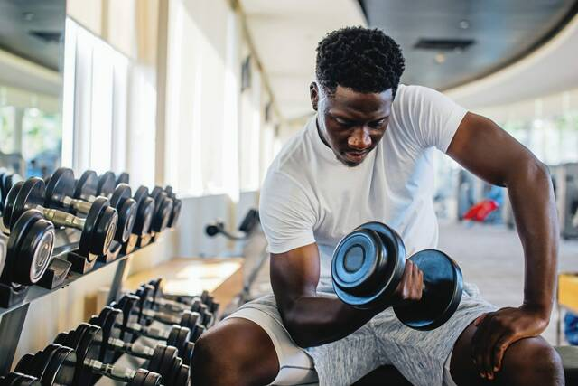
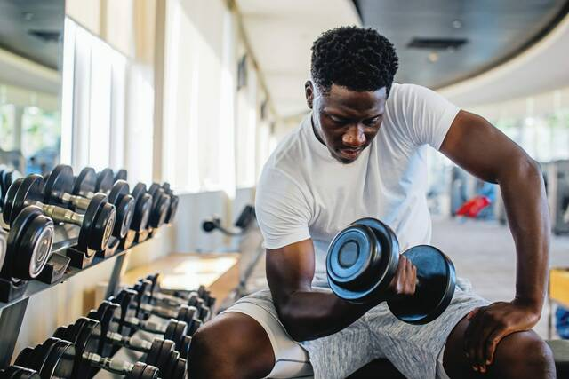

Exercise
Exercise is the next aspect of fitness. It's important to be physically active.
Being physically active can improve your brain health, help manage weight, reduce the risk of disease, strengthen bones and muscles, and improve your ability to do everyday activities.
Next we'll go over three types of exercises you can do to improve your fitness. Those are endurnace training, strength training and flexibility training. I will provide some examples in each area you can do at each fitness level.
"We are what we repeatedly do. Excellence then is not an act but a habit." - Aristotele
Endurance Training
Also called aerobic exercise, endurance exercise includes activities that increase your breathing and heart rate such as walking, jogging, swimming, biking and jumping rope.
Start out with 10-15 minutes at a time and then gradually build up. The American Heart Association recommends that adults get at least 150 minutes (2 1/2 hours) of moderate to vigorous activity per week.
"Endurance is one of the most difficult disciplines, but it is to the one who endures that the final victory comes." - Gautama Buddha
Strength Training
Strength training (also known as resistance training) is a type of exercise that causes your muscles to contract against an outside resistance.
The outside resistance can be from your body weight, weight machines, medicine balls, resistance bands or dumbbells.
Try to dedicate 30 to 60 minutes a day, two days a week. Select four to six exercises that target different major muscle groups.
“If you think lifting weights is dangerous, try being weak. Being weak is dangerous.” - Bret Contreras
Flexibility Training
Flexibility exercises are activities that improve the ability of a joint to maintain the movement necessary for carrying out daily tasks and physical activity. Examples of flexibility activities include: stretching. yoga. tai chi.
The best time to do flexibility exercises is when your muscles are already warm so they can stretch farther without tightness or pain.
You can achieve the most benefits by stretching regularly, at least two to three times a week. Even 5 to 10 minutes of stretching at a time can be helpful. Skipping regular stretching means that you risk losing the potential benefits.
"Flexibility is the key to stability." - John Wooden
 
